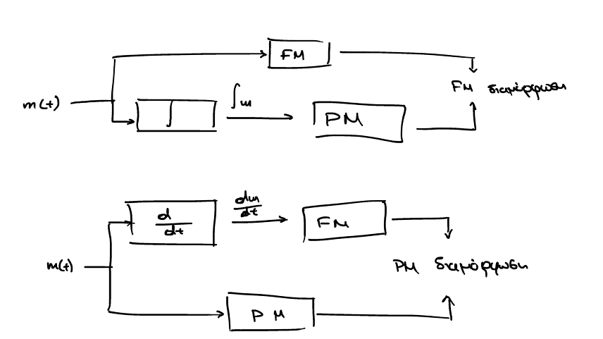

Διάλεξη 5: FM,PM Εισαγωγή στην διαμόρφωση FM
Table of Contents
Διαμόρφωση γωνίας: Angle Modulation
Όπως στην διαμόρφωση πλάτους έχουμε διάφορες υποκατηγορίες, έτσι και στην διαμόρφωση γωνίας.
- FM: (Frequency) Διαμόρφωση συχνότητας
- PM: (Phase) Διαμόρφωση Φάσης
Αν και οι τύποι τους παρουσιάζουν αρκετές διαφορές, τονίστηκε πως αποτελούν τις δύο όψεις του ίδιου νομίσματος, καθώς σε αντίθεση με την διαμόρφωση πλάτους (η οποία μπορεί να θεωρηθεί γραμμική) εδώ έχουμε την πληροφορία να εντάσσεται μέσα στο πεδίο της γωνίας και συχνότητας.
Αυτό προκαλεί:
[ ]Διαστολή του εύρους ζώνης (δες τελευταία παράγραφο)- Μεγαλύτερη αντοχή στον θόρυβο.1
Κάτι το οποίο έπρεπε θεωρητικά να έχω παρατηρήσει από την AM διαμόρφωση:
| \(A_c\) | Carrier’s Amplitude | Πλάτος φέροντος |
| \(f_c\) | Carrier’s Frequency | Συχνότητα φέροντος |
Ο γενικός τύπος της διαμόρφωσης γωνίας είναι ο εξής:
\begin{equation} \label{eq:1} x(t) = A_C\cos{\left(\theta t\right)} \end{equation}με την πληροφορία να εισάγεται στο \(\theta\):
\begin{equation} \label{eq:2} \theta(t) = 2\pi f_ct + \phi(t) \end{equation}Στιγμιαία συχνότητα
Αν και σαν μέγεθος είναι δύσκολο να παρατηρηθεί φυσικά, είναι εύκολο να κατανοηθεί μέσα από την σχέση μεταξύ φάσης, γωνιακής συχνότητας/ταχύτητας, και συχνότητας:
Είναι:
\begin{align*} \label{eq:18} f = &\frac{\omega}{2\pi}\\ \stackrel{\omega = \frac{d{\theta}}{d{t}}}{=} &\frac{1}{2\pi} \frac{d{\theta}}{d{t}} \\ \stackrel{\theta=2\pi f_ct + \phi(t)}{=} &fc+ \frac{1}{2\pi}\frac{d{\phi}}{d{t}} \end{align*}Πριν προχωρήσουμε, ορίζουμε νέο μέγεθος: την στιγμιαία συχνότητα (instant frequency)
\begin{equation} \label{eq:3} f_i(t) = \frac{1}{2\pi} \frac{d\theta}{dt} = f_c + \frac{1}{2\pi} \frac{d\phi}{dt} \end{equation}η οποία αποκτά ιδιαίτερη σημασία κατα την σύγκριση FM, PM
PM: Phase Modulation
Εδώ η φάση έχει γραμμική σχέση με το μήνυμα, με συντελεστή \(K_p\), ο οποίος λέγεται και ευαισθησίας φάσης.
\begin{equation} \label{eq:6} \phi(t) = K_pm(t) \end{equation}οπότε το πλήρως διαμορφωμένο σήμα είναι της μορφής:
\begin{equation} \label{eq:8} x(t) = A_c\cos{\left(2\pi f_ct + K_pm(t)\right)} \end{equation}Δείκτης διαμόρφωσης φάσης
Ο δείκτης διαμόρφωσης \(\beta_p\) για την PM ορίζεται ως εξής:
\begin{equation} \label{eq:15} \beta_p = \max \Delta \phi = K_p \max |m(t)| \end{equation}Ο δείκτης διαμόρφωσης της PM είναι ενδεικτικός της μέγιστης απόκλισης φάσης: είναι ουσιαστικά η μέγιστη διαφορά που μπορεί να αποκτήσει το \(\theta\) από την \(2\pi f_ct\)
FM: Frequency Modulation
Η \(f_i\) έχει γραμμική σχέση με το μήνυμα, με συντελεστή \(K_f\), ονομαζόμενο και ευαισθησία συχνότητας.
Στην διαμόρφωση συχνότητας:
\begin{equation} \label{eq:4} \frac{d{\phi}}{d{t}} = 2\pi K_fm(t) \end{equation}στην οποία λύνοντας ως προς \(\phi\):
\begin{align} \label{eq:5} \phi(t) &= 2\pi K_f\int_{-\infty}^t m(\tau)d\tau\\ f_i(t) &= f_c + K_f m(t) \end{align}Η δεύτερη σχέση μας δείχνει ότι περιμένουμε οι όποιες μεταβολές στην συχνότητα περιμένουμε να είναι γύρω από την \(f_{c}\)
Δείκτης διαμόρφωσης συχνότητας
Ο δείκτης διαμόρφωσης \(\beta_f\) για την FM ορίζεται, σε πλήρη αναλογία με την PM:
\begin{equation} \label{eq:615} \beta_f = \frac{\max\Delta f}{W}= \frac{K_f \max |m(t)|}{W} \end{equation}με την μόνη διαφορά να είναι πως έχουμε μία κανονικοποίηση ως προς το εύρος ζώνης.
Συνεχίζοντας την αναλογία με το \(\beta_p\) εδώ έχουμε πως το \(\beta_f\) (πολλαπλασιασμένο επί \(W\) λόγω της κανονικόποίησης) μας δείχνει την μεγαλύτερη απόκλιση που μπορεί να εμφανίσει η στιγμιαία συχνότητα από την συχνότητα φέροντος (\(f_c\))
Ανάλυση με παράλληλες και κάθετες συνιστώσες.
Μπορούμε να κάνουμε ανάλυση του εκάστοτε σήματος σε inphase και quadrature συνιστώσα, όπως άλλωστε κάναμε και στο AM. Εδώ όμως, αυτή η ανάλυση είναι πολύ απλή:
\begin{align} \label{eq:17} x(t) = & A_c \cos{\left(2\pi f_ct + \phi(t)\right)} \stackrel{\cos{(a+b)} = \cos{a}\cos{b}-\sin{a}\sin{b}}{\Rightarrow} \\ =& A_c\cos{\phi(t)}\cos{2\pi f_ct} - A_c\sin{\phi(t)}\sin{2\pi f_ct}\\ =& x_i(t)\cos{2\pi f_ct} - x_Q(t)\sin{2\pi f_ct} \end{align}Οπότε έχουμε ακόμα: περιβάλλουσα και φάση
\begin{align} \label{eq:10} V(t) &= \sqrt{x_I^2 + x_Q^2} = A_{c}\\ \theta(t) &= \arctan{\frac{x_Q}{x_I}} \end{align}Baseband Αναπαράσταση:
Αναπαράσταση της παραπάνω σχέσης με την χρήση μιγαδικών:
\begin{equation} \label{eq:9} x(t) = x_i(t) + \jmath x_Q(t) \end{equation}Χρήσιμο κατα την αναπαράσταση σημάτων στο επίπεδο.
Με την σειρά της η αναπαράσταση σημάτων στο επίπεδο είναι χρήσιμη για την διαχείριση των σημάτων, βάση κανόνων Ευκλίδειας γεωμετρίας.
Visualizing PM and FM
Figure 1: Το σήμα εισόδου(πληροφορίας) και τα αντίστοιχα σήματα εξόδου κατόπιν διαμόρφωσης PM,FM.
Συνοψίζοντας τα παραπάνω, κατα την διαμόρφωση γωνίας μπορούμε να δούμε.
\begin{equation} \label{eq:7} \phi(t) = \begin{cases} K_pm(t)\\ 2\pi K_f\int_{-\infty}^tm(\tau)d\tau \end{cases} \end{equation}Παρατήρηση για το γράφημα
Προσπαθώ γενικά να βγάζω τα διαγράμματα μου με python, αλλά λόγω της μη
εξοικείωσης μου με τις numpy και scipy, βρίσκω συχνά ατέλειες οι οποίες είναι
παραπάνω από απλά εμφανείς στο παραπάνω διάγραμμα.
import numpy as np import matplotlib.pyplot as plt import scipy # mf = message frequency mf = 5 fc = 5 Ac = 2 Kf = 2 Kp = 2*np.pi*Kf T = np.linspace(0,2/mf,1000) fig, (ax1, ax2, ax3) = plt.subplots(3,1) def m(t): return np.cos(2*np.pi*mf*t) def fm(t): res = np.zeros_like(t) for i,val in enumerate(t): y,err = scipy.integrate.quad(m,-np.inf,val) res[i]= Ac*np.cos(2*np.pi*fc*val + 2*3*Kf*y) return res pm = Ac*np.cos(2*np.pi*fc*T + Kp*m(T)) ax1.plot(T,m(T)) ax1.set_title("message") ax2.plot(T,pm) ax2.set_title("PM") ax3.plot(T,fm(T)) ax3.set_title("fm") fig.show()
Αν έχει κανείς συμβουλή για το πως να μην καταστρέφω έτσι τα integrals θα χαιρόμουν να το ακούσω …
- Ενημέρωση στις: . Μέσα στις γιορτές έτυχε να το δουλέψω λίγο το παραπάνω (παρόλο που ο κώδικας δεν έχει ενημερωθεί), και βλέποντας αρκετές πηγές οι οποίες είχαν (και εκείνες) πρόβλημα με το γράφημα της FM διαμόρφωσης ντρέπομαι λίγο λιγότερο :P. Παρόλα αυτά, μέχρι να διορθώσω λίγο τον κώδικα, μια κάπως πιο ομαλή γραφική παράσταση μπορεί να εμφανιστεί αν αντί του υπολογισμού του ολοκληρώματος από \(-\infty\), εώς την εκάστοε χρονική στιγμή χρησιμοποιήσει κάποιος την ιδιότητα των ολοκληρωμάτων ώστε κάθε σημείο του γραφήματος να είναι άθροισμα των προηγούμενων…
Σύγκριση Γραφικών παραστάσεων AM, FM, PM
Σε αντίθεση με AM οπου βλέπεις διακυμάνσεις πλάτους σε ένα γενικότερο σήμα σταθερής συχνότητας στην διαμόρφωση γωνίας η /τελική γραφική παράσταση παρουσιάζει αραιώσεις:
- Στην FM διαμόρφωση γενικά είναι πιο εύκολο να καταλάβεις τις αραιώσεις και τις συμπτύξεις (αν και όχι όπως το εμφάνισα εγώ)
- Στην PM είναι ακόμα πιο δύσκολο να διακρίνεις την διαφορά.
Ισχύς
Η ισχύς του σήματος μας είναι σταθερή, όπως άλλωστε ήταν αναμενόμενο από τον γενικό τύπο: \(x(t) = A_c\cos{\theta}\):
\begin{equation} \label{eq:12} P_{PM} = P_{FM} = \frac{A_c^2}{2} \end{equation}Ιδιότητα της δυικότητας
Οι διαμορφώσεις PM, FM εμφανίζουν την ιδιότητα της δυικότητας, την οποία στην συγκεκριμένη περίπτωση αποδίδουμε στο γεγονός ότι μπορούμε να μεταδώσουμε την ίδια πληροφορία (διαμορφωμένη με τον ίδιο τρόπο) με διαφορετικό μηχανισμό απο πίσω.
Ισοδύναμα η δυικότητα είναι εμφανής από το εξής: ΔΕΝ ΧΡΕΙΑΖΕΤΑΙ PM/FM ΔΙΑΜΟΡΦΩΤΗΣ ΓΙΑ ΤΗΝ ΕΠΙΤΕΥΞΗ ΤΗΣ ΑΝΤΙΣΤΟΙΧΗΣ ΔΙΑΜΟΡΦΩΣΗΣ.
Οι ισότητες παραπάνω ισχύουν υπό την προϋπόθεση πως2:
\begin{equation} \label{eq:13} K_p = 2\pi K_f \end{equation}
Figure 2: Υποδεικνύοντας την δυικότητα μεταξύ PM, FM
Ψηφιακό και Διαμορφώσεις: FM
- AM: Κλασσικό έχει ήδη αναλυθεί
- FM: Χρήση ταδε αριθμού διαφορετικών συχνοτήτων
- PM: Χρήση τάδε αριθμού διαφορετικών φάσεων - η διαφορά φάσης είναι ανιχνεύσιμη
στον δέκτη.
- Δεν είναι τόσο σημαντικό στο πλαίσιο του μαθήματος αλλά συνδέει TLP1 - TLP2
Κανόνας του Carson και εύρος ζώνης
Στην διαμόρφωση γωνίας έχουμε θεωρητικά άπειρο εύρος ζώνης, όπως προκύπτει από την σειρά Taylor:
\begin{align*} \label{eq:11} A_c\cos{\left(\theta(t)\right)} &= A_c\cos{\left(2\pi f_ct\right)}\cos{\left(\phi(t)\right)} - A_c\sin{\left(2\pi f_c t\right)}\sin{\left(\phi(t)\right)}\\ &\stackrel{\text{Taylor}}{=} A_c\cos{\left(2\pi f_c t\right)}[1 - \phi^2(t)/2! + \cdots ] - A_c\sin{\left(2\pi f_c t\right)} [\cdots] \end{align*}Από την παραπάνω έκφραση, καταλαβαίνουμε και επαληθευόμαστε κατα τον μετασχηματισμό Fourier του διαμορφωμένου σήματος, πως το διαμορφωμένο σήμα έχει εύρος \(nW\), όπου \(n\) η μεγαλύτερη δύναμη στην οποία υψώνεται η \(\phi\).
Από τις σειρές Taylor όμως ξέρουμε ότι \(n \to \infty\):
\begin{align*} W' = \lim_{n\to\infty} nW = \infty \end{align*}Αυτή η προσέγγιση είναι εύκολη μαθηματικά και ίσως βοηθήσει στην κατανόηση.
Στοιχείο που δεν είναι καθόλου πρακτικό για την ανάλυση της διαμόρφωσης γωνίας. Χρειάζεται μια κάποια πιο ρεαλιστική προσέγγιση, η οποία, επιτρεπόμενη λόγω της ραγδαίας μείωσης των όρων εκφράζεται από τον κανόνα του Carson:
Το εύρος ζώνης \(B\), στο οποίο περιλαμβάνεται τουλάχιστον το \(99%\) της συνολικής ισχύος δίνεται από την σχέση:
\begin{equation} \label{eq:14} B\approx 2W(\beta+1) \end{equation}Όπου \(\beta\) οι συντελεστές διαμόρφωσης για PM και FM αντίστοιχα.